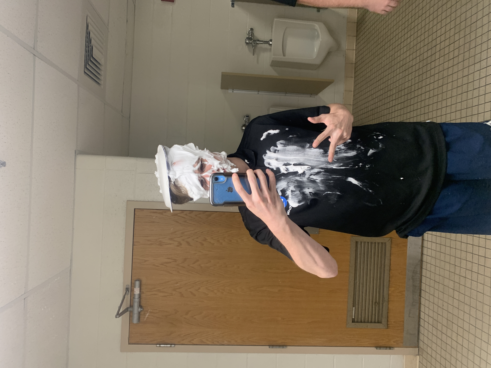
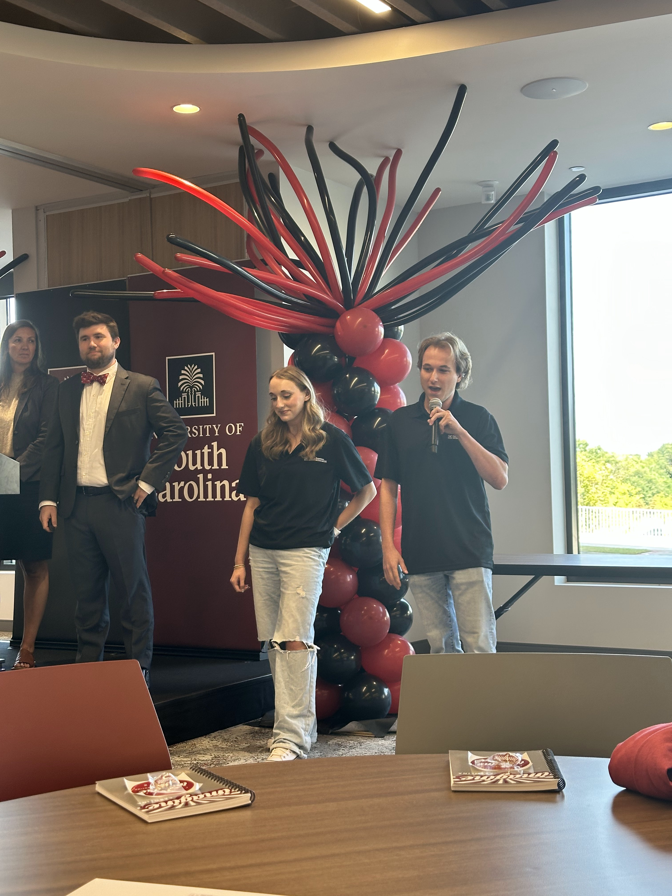

My experience as a STEM Instructor at Lavner Education reshaped the way I understand technical knowledge and what it truly means to teach it. Entering the classroom with a background in Computer Information Systems, I initially focused on helping students master technical skills—writing correct syntax, building intricate robots, and solving increasingly complex problems. Over time, however, I realized that technical ability alone was never the real challenge. The real work was helping students make sense of those skills and feel confident applying them.
Leading STEM camp sessions forced me to slow down and rethink how I communicated complex ideas. Concepts that felt intuitive to me had to be carefully broken apart and rebuilt in ways a child could understand. I drew directly from my coursework in SPCH 140: Public Communication, Professor Mueller, Spring 2023, applying principles of audience analysis and message clarity to ensure technical lectures remained engaging. I learned that clear communication is not separate from technical expertise; it allows that expertise to matter. These professional practices are learned through guided experience rather than instruction alone.
As classroom sessions became collaborative, I found myself learning alongside the students and adapting my approach. My commitment to this balance led me to establish the Mental Health Auxiliary Chair within the Alpha Sigma Phi fraternity. I recognized that technical performance suffers when well-being is ignored. By creating this role, I integrated emotional intelligence into our brotherhood events through mindfulness walks, organizing group physical activity, and bi-weekly check-ins where brothers could discuss their highs and lows. I advocated for resources and peer support systems, ensuring my brothers felt supported as individuals and had important conversations beyond the surface level. This initiative taught me that sustainable leadership requires proactive advocacy for the mental health of every team member.
Teaching LEGO robotics further highlighted how my past experiences shaped my abilities. In CSCE 247: Software Development, Professor Plante, Fall 2023, I learned to approach projects through the lens of design patterns and the software development life cycle. I brought these themes into the classroom, teaching students that technical solutions succeed only when designed with the end user in mind. Learning the basics of American policy through a game of Risk in POLI 201: American National Government, Professor Lawson, Spring 2024, unexpectedly deepened my understanding. Watching a complex system shrink down into a board, a few pieces, and a handful of strategic choices reminded me how powerful learning through play can be. Risk, a simple board game, turned abstract ideas like resource management, negotiation, and long-term planning into something simple, tangible, and genuinely fun. The lighthearted competition showed me that people often think more clearly after a playful break or a low-stakes challenge. That experience shaped my teaching style by reinforcing that persistence, experimentation, and moments of enjoyment can make even complicated concepts feel approachable.
Perhaps the most meaningful lesson came from observing how students interacted with one another. When students collaborated, shared ideas, and supported each other, their solutions improved noticeably. Teaching in this environment required patience, empathy, and the willingness to remove unnecessary technical language in favor of understanding. By meeting students where they were and adapting to different learning styles, I saw confidence grow alongside competence.
This experience taught me that effective technical education is not about demonstrating knowledge—it is about guiding others toward it. It challenged me to become not just a stronger technologist, but a more thoughtful communicator and leader.
Images

At the end of the week, a camper got to pie an instructor at the end of the week, and I volunteered everytime. It was always a memorable moment that reflected the relationships and community-building that were part of the experience.

I had the opportunity to present the Carolina Experience program with other staff members at the 2025 Imagine Carolina event, a great opportunity to share our office's place on campus with students and faculty.
Artifacts
Within the Classroom
SPCH 140 Monroe Speech
Here, I've created an outline for a speech I gave in SPCH 140: Public Communications. The speech was on an issue I was passionate about, and I chose to focus on preserving habitats for Orangutan. This artifact supports the key insight by demonstrating how I applied principles of audience analysis and message clarity to communicate a complex issue in an engaging way. It shows my ability to break down technical information into clear, relatable points that resonate with my audience.
This is a design document my group and I created for a project in CSCE 247: Software Development. It includes an overview of the project, a description of the problem we were trying to solve, and a detailed explanation of our proposed solution. This artifact supports this key insight by showing how I applied my technical knowledge to create a clear and organized plan for a complex project.
This is a lesson plan I created for the students in my Minecraft class one week of summer camp. It includes a brief introduction to the topic, an explanation of a handful of components, as well as their real-world electronic counterpart. This artifact supports this key insight by showing how I applied my technical knowledge to create an engaging learning experience for students, while also incorporating elements of play and creativity to make the material more accessible and enjoyable.
Here, another member and I outlined the framework for a new health and wellness initiative within our fraternity. We identified key areas of focus, proposed activities and resources, and created a plan for implementation. This experience taught me how to apply my organizational and leadership skills to support the well-being of my community.